Gentoo and Old Tech Experience
So, it has been like 2 months (more or less) since I first start installed and change my life to Gentoo linux. At first, people don’t believe me that I use Linux or tinkering with old laptops. Surprisingly, I did. Here is the story and how I see it.
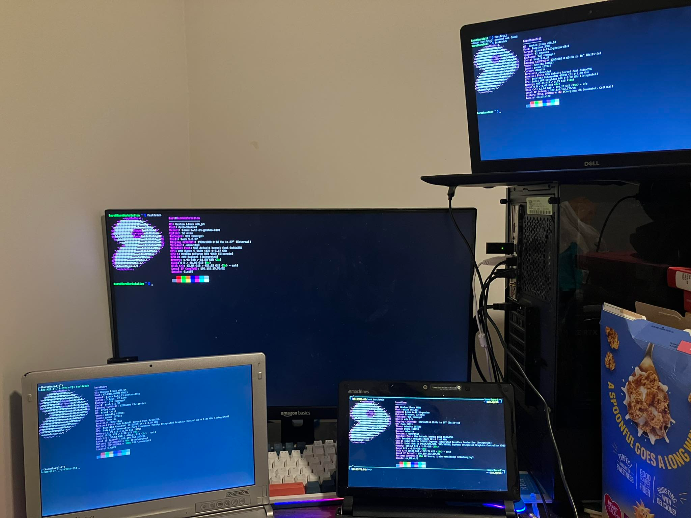
Starting Point
Why Old Tech?
You know, I live in the world that people labeled me as “Gen-Z”. Typical stereotype of Gen-Z is that we live in the world full of technology, like the modern technology. That is partially true if you are late Gen-Z. Sadly, I was born and live with Windows 95. I use a lot of Windows XP, 7, 8, 8.1, 10, and 11 as I am growing up (Vista, not so much).
I was born with CRT screen, sony beta cam, and a lot of tech people called it “old”. Home computer was just a starting point back then and not widely popular due to its cost and other setup (like ISP, hardware shipping, etc.) You know, we don’t have good shipping system back then so if you live in a bit of rural area (like I did), only way to get computer is either from local company or tech shop nearby.
I was not a computer nerd back then. I know how to use computer and I can say I know a lot more than typical people. But I would say because I know how to read tech manual better than the other than actual skill. I know how to read in English (but not how to write properly, sadly). I like computer because it is flashy and cool back then. Like, I can talk to my sister who study aboard via Skype and MSN (or QQ).
Back then, if we want to use cool webcam, we have that. If we want to talk to stranger online, use camfrog. If you want to roleplay? Try Forum. You have all the forum you want ranges from tech support, selling stuff, to Harry Potter roleplay, alumni forum of some school, etc. You can Google it (or heck, use “hub” website like Yahoo! or Kapook to get to where you want).
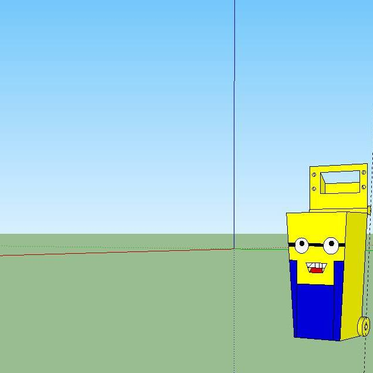
Can’t deny that those are one of the fun memory I have in life. Sadly, as some of you might already know, my life in childhood was not the best. I got bullied a lot in middle and high school. My first laptop which is netbook was stolen by one of the student during my middle school. Teachers and staff did nothing about it and pretend it never happened. I got physical assults from people in there a lot and a lot of psychological hazing. My life was shit back then.
The only few happy memories I have tied with the computer. I did a lot of robotics back in middle and high school as an escape route to have time to myself.
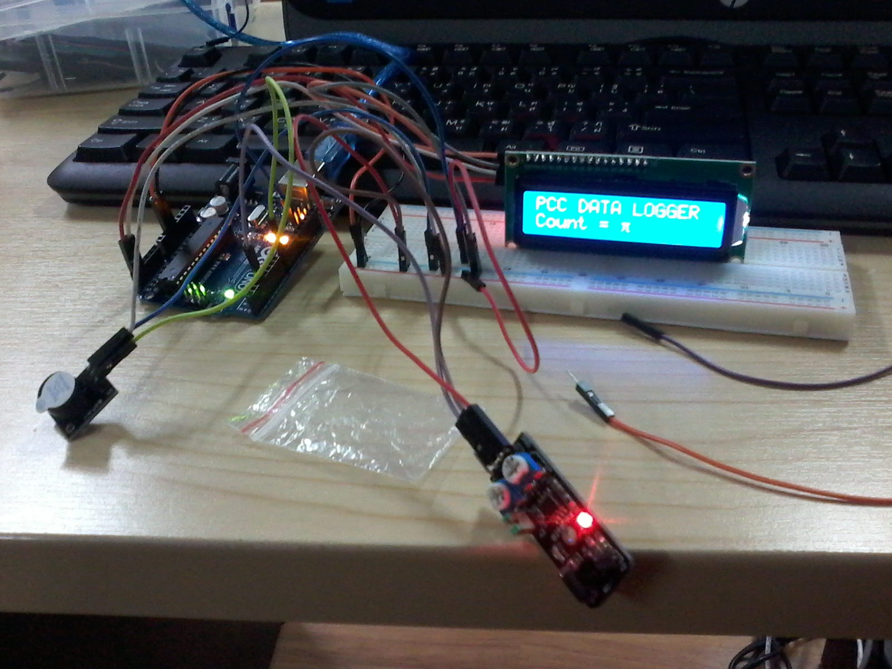
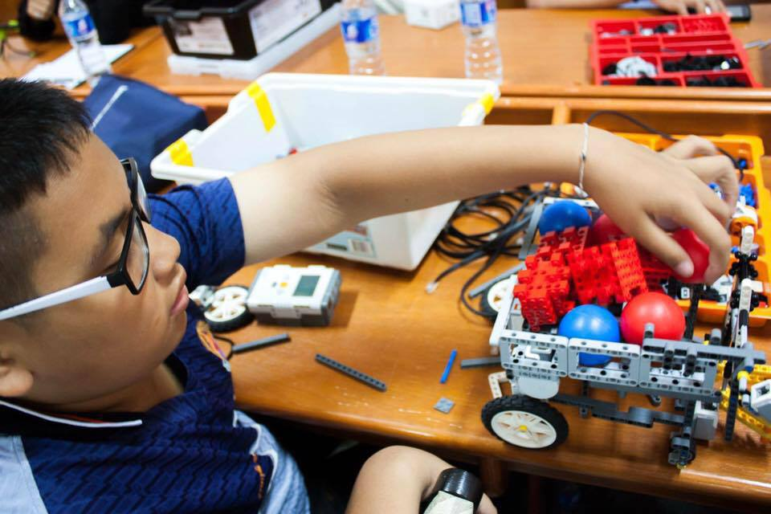
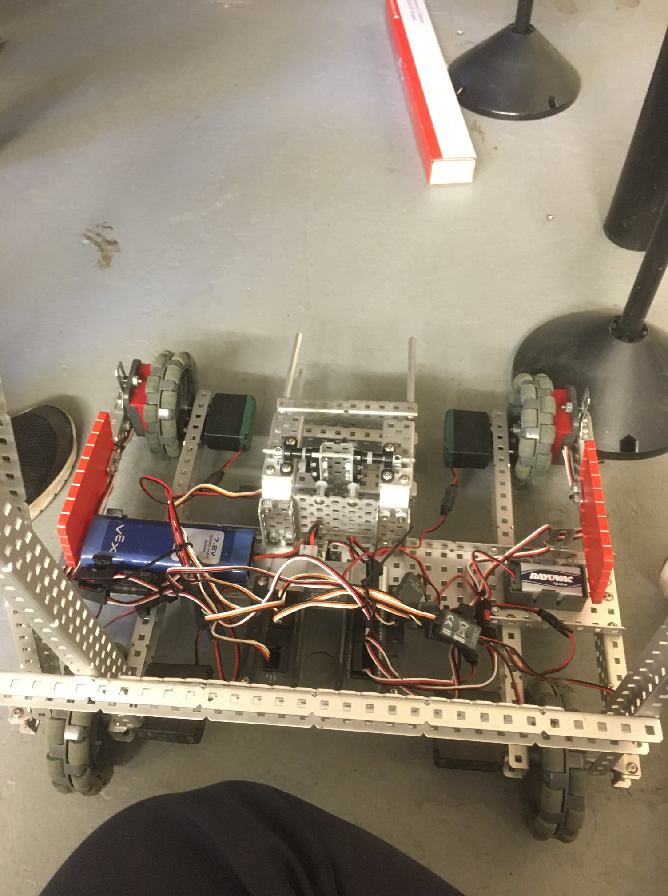
Using Linux was also one of the experience I try to distract myself from the painful reality. In fact, I know Linux since primary school from national opeating system: Suriyan. One of the rep give me the disc full of educational software and Tux games. I was happy back then to explore all of those.
Then, in my middle school, I started to use Linux more often. I used to daily drive with Ubuntu back then. I would change the font to national font “TH-SarabunPSK” and feel like a cool kids. But alas, as a kid, I do have urge to play game and back then, Linux was shit for gaming. So, I undeniably need to move to Windows to play game.
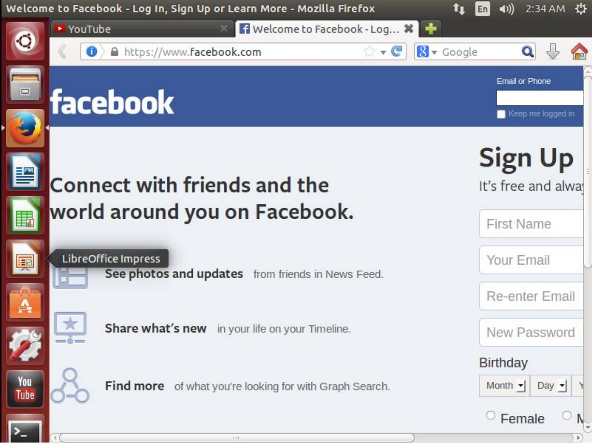
In high school, I went back to Linux again when my computer is broken, it was a good time tinkering with GTK and stuff. Then, it is the start of the old tech arc of my life. I started to buy old Macbook off eBay and play with it.
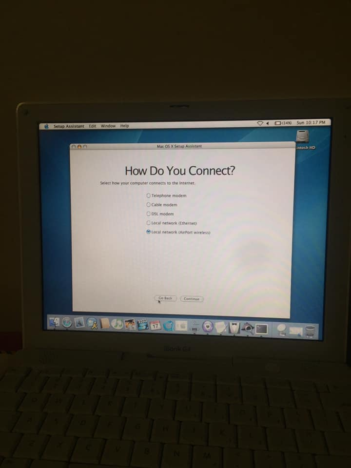
I was surprised that it has Python installed in it back then. It is like a spark in my brain to look back again and think about it.
Linux Transition
Well, I use linux a lot when I was first start to know about CTF. There was a cool CTF called picoCTF where you are supposed to “find” the hidden flag by completing the objective like finding hidden string in the image, or pwning the system using canary stuff. Or reverse engineering the pseudo random number generation algorithm to retrieve the passcode, or even to render SSTV stuff.
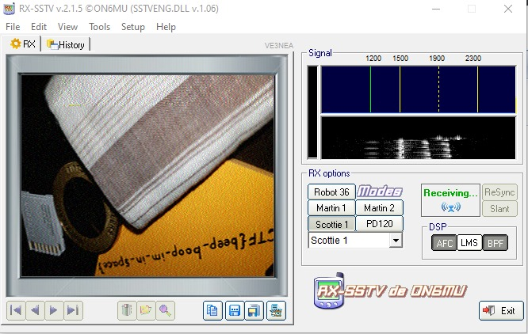
I used Windows back then because, duh I play game. Problem is, it requires a lot of shell command that I need to resort to the competition webshell instead of my own computer. That is the start of my Linux arc. Again, I use Ubuntu because it was something I used to.
I use that to complete the assignment up to the college, while still have Windows PC lying around for gaming. I used Parrot OS on old iMac I auctioned from the eBay. Then, COVID hit. All of my computer were lost because I need to go back to my home country during the break without packing up the stuff.
So, the start of the college is when I need Ubuntu machine for “Data Science” assignment. Well, I will say GPU support back then was fine but not the best. I learned a lot about hardware and driver and low-level stuff (beside C that I usually code with already).
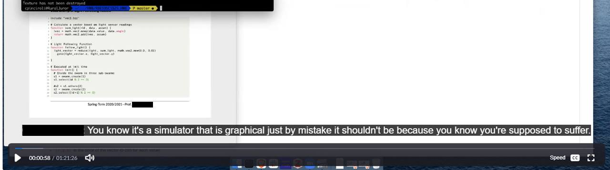
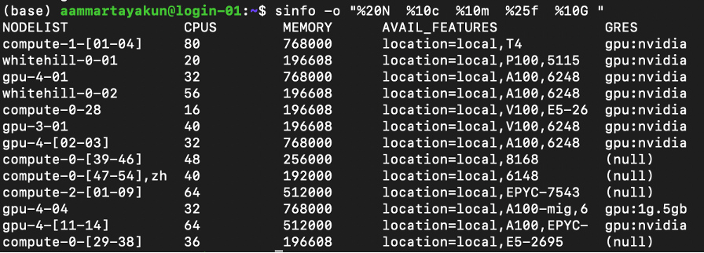
Other than using Ubuntu, MacOS, or computer cluster, I treat Linux as “work” system as I am a game addicted.
Full Linux Experience
Time goes by and now I am Ph.D student. I am suffering from burnout as I rush through the program (got undergrad and master at the same time within 4 years, 21 credits almost every semesters, 4 theses at the end). I found that old tech is really interesting. Old tech is like, me. It is capable, but deem obsolete by other people just because I am slow from my burnout.
I then started to buy old computer one by one. I heard that BunsenLabs is one of the lean system so I use that on my first computer: emachine em250. Well, it is 32 bits machine so I use Bunsenlabs. Hey, it works. Just still slow.
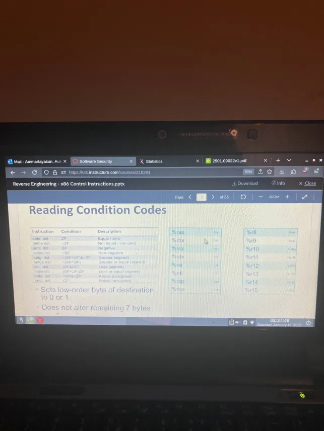
Then, I decided to use Arch Linux because it sounds like a light system. I use Arch32, the one with no archinstall script. Oh well, it is my first time I need to learn about how Linux works really. But more like, what components are required to make a workable Linux environment.
I need to format my drive, partition it, and install minimal basic system, chroot and install the rest, then install bootloader, and done.
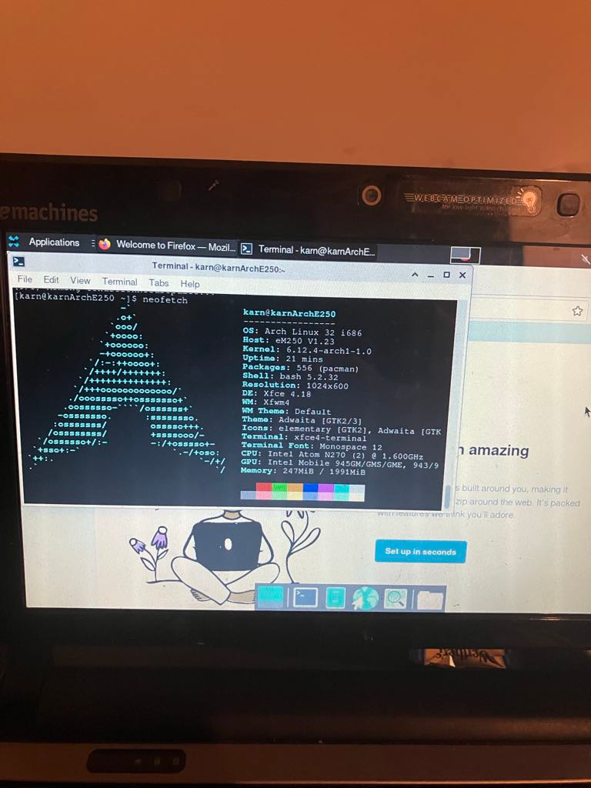
To be honest, Arch Linux is easier to use and is intuitive. I am surprised that the “hard-to-use” system is really not that hard, but I can see why people suffer with it. It is indeed light! Can be lighter without xfce of course, but I want full desktop because I am too lazy. Then, it hits me, the way to make this even lighter!
Then, I started to buy more old laptop and more. And alas, Gentoo Linux is where I am going next. I heard that Gentoo is notorious operating system yet should be able to run on any (reasonable) hardware that can compile code. Mine does, so why not give it a try?
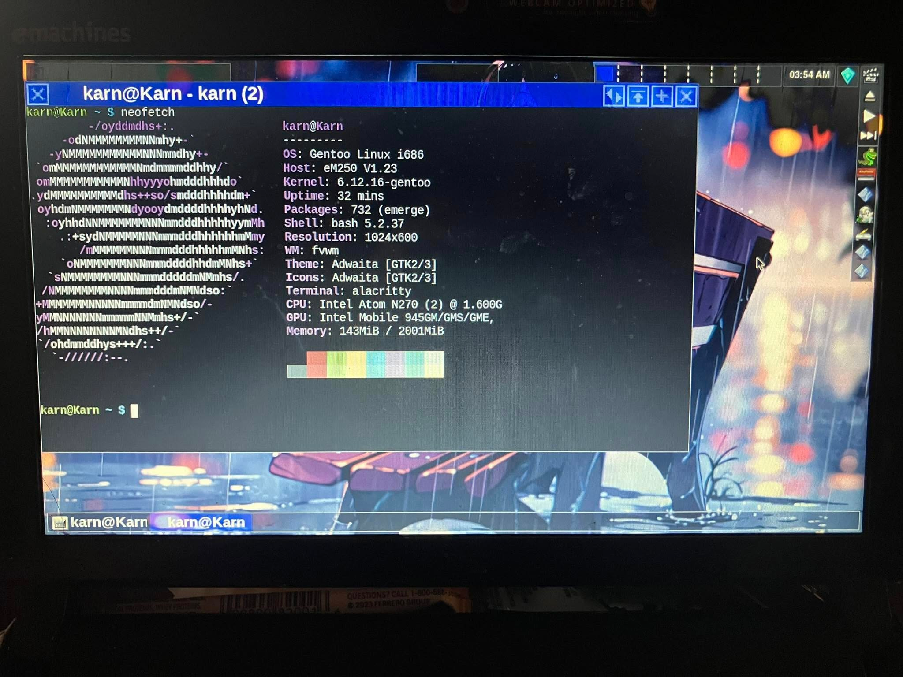
I installed everything and compile everything myself. It is 32 bits so there is no like binary package really. I did not setup crossdev or something similar because I am completely new to this. It took me a week to get the running system with this FVWM. I hate compiling llvm stuff so much yet I need it for xorg-server. It was a pain watching this Intel Atom N270 scream to death.
But you know what? It does run fast and snappy. I feel great about my system. I listen to radio using this machine and try to daily drive with it so it force me to tune the system or make it fast enough for daily use. I learned about USE flag and optimization a lot through this machine. So much so that I tuned a lot of stuff to my liking yet forget to add random number generation to the kernel option.
I probably will left it there and update it during the break. But hey, learning new things, troubleshooting stuff, fix stuff, and tune stuff actually help with my burnout. It is like a hobby per se, where I can enjoy challenging myself with the problem in there. As you can see, I can read PDF just fine on this computer or use Canvas and stuff.
Now, the second computer in the list is Panasonic Toughbook CF-C1. Damn this is one of my favorite computer. It is x86_64 computer so binary binary binary. I use oddlama/gentoo-install script to install kernel on this one because I am too lazy. But alas, I need to manually install the system myself anyway because I mess it up again and again tuning it.
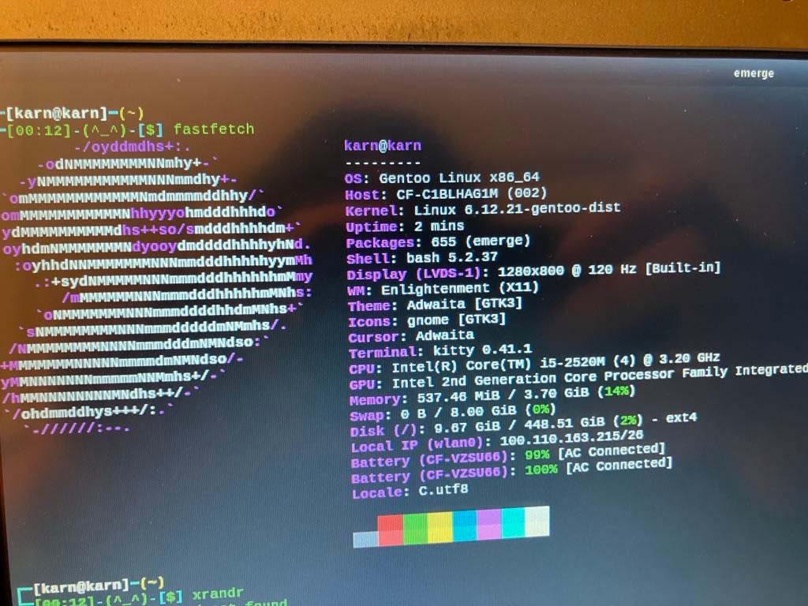
For this computer, I mostly try different DE like Enlightenment,xfce or the typical WM like FVWM. I honestly like both DEs but now lean more towards just WM. Then, I found myself want to fully daily drive the Linux, including my main Workstation I used to play game with. So, I install Gentoo on my main computer.
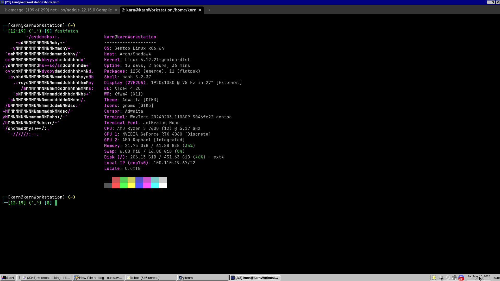
Damn, it is fast and snappy. There is no problematic Windows update stuff or any silly Windows thing. Just what I want. I can tune and tinker everything, use anything I want. And now I can play game using proton from Steam. I feel like I am alive daily driving this. Of course, compiling stuff take time but this is my powerhouse so I can just go to bathroom or walk outside, come back, and everything is done.
Nvidia is not a problem either, Gentoo surprisingly make it easy to install those driver compared to other Distro (as per my old experience). It is seamless and I have no problem installing driver.
Meditation on Old Tech
Maybe me tinkering on this old laptop is a way I converse with myself. Maybe it is just me trying to tell myself that I am the embodiment of this laptop that still functioning, but we deep down know that at this point I am burning it out.
It is like I try to fix myself, holding myself together when the world is demanding more and more. This machine is still capable, yes. But it really need to push effort to just meet the same level as other hardware. It can visit many websites or even youtube, but the world just ignore this old machine. We say it is obsolete and makes website and application more absurd.
We make expectation for a person. And that expectation is more absurd and absurd that there is no human left in there. We forget that human exists. We see it as a machine, as this computer that either being e-waste or need to meed absurd standard.
I don’t know how long I can hold myself together. Maybe in the end I might just be e-waste. Not fast enough for modern standard. Does not support modern instructions. Low memory with old hard drive. Can’t just get binaries and need to compile and build software from scratch. Power hungry and doesn’t hold much charge on batteries.
It just take one loose connection or one capacitor to explode to make people ditch it without looking at it. It is too old why bother? It is e-waste at this point why fix it? The world does not wait. People does not wait. It can easily run optimization ir even Monte Carlo simulation if you give them time and care, but why bother on this obsolete tech when we have better one?
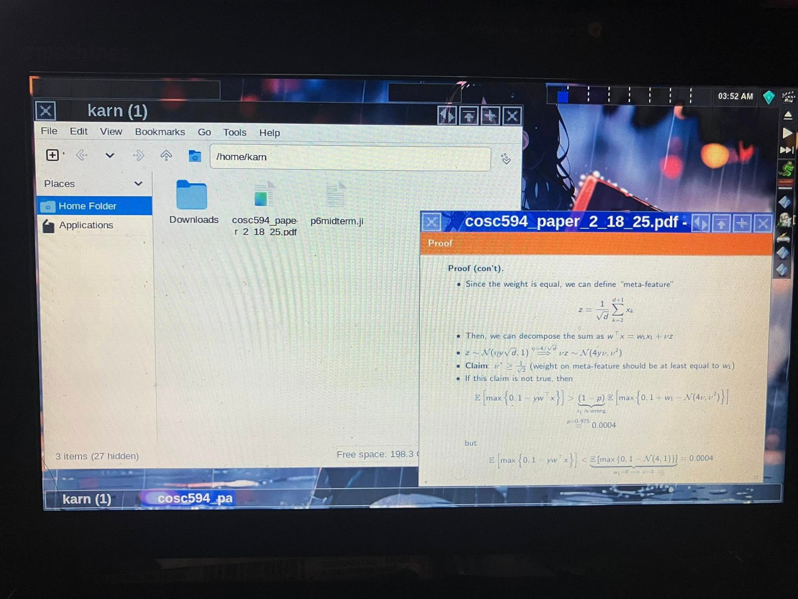
Final Remark
This is more or less brain dump than the good blog, I might come back and tune it a bit. However, this is really my gentoo experience. It is damn fast, damn snappy. I learned a lot, and I feel like I have full control over my computer. Other distros does not give me this, not even Arch Linux. Community is nice if you know where to talk to (some are still elitists like Arch, but more welcome compared to Arch in my opinion).
Handbook is really nice touch but I learned a hard way to not treat that as a holy grail, but to treat it as a guideline and do what you have to do with your hardware (on my emachine, I can’t compile kernel following the direction verbatim, but I need to deivate a bit to fix problems here and there to compile the kernel). That is what you should expect: solving the problem, rather than to think that guide is seamless.